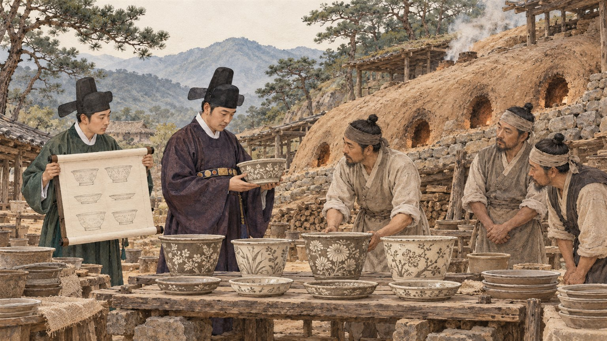
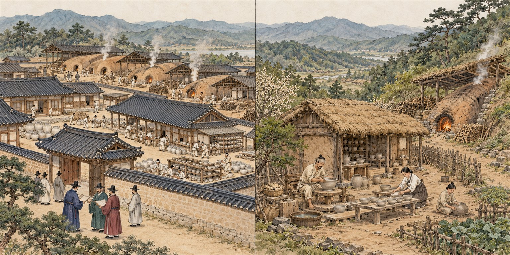

상판리는 『세종실록』 지리지의 '상품 자기소'이자 왕실·중앙관청에 자기를 바친 최상위 공납 가마터로 확인되지만, 조선 도자사에서 '관요'는 1466~1469년경 광주에 세워진 사옹원 사기소를 가리키는 것이 표준 용례이므로, '상품관요'는 학계 표준 용례와 다르고 확인된 용례도 없는 표현이다. 사적 신청서가 쓴 '공납자기소'가 현재의 학계·행정 용례와 맞다.

보존회 안에서 세 가지가 문제가 되고 있다. 첫째, 상판리 가마터를 '상품관요(上品官窯)'라고 불러도 되는가, 아니면 '관요'가 아닌 '공납자기소'인가. 둘째, 보존회 이름에 들어간 '왕실공납'이라는 말이 적절한가. 단체 예산·운영에 관한 쟁점은 성격이 달라 별도 문서 「보존회 운영 원칙」으로 옮겼다.
이 문서는 사람을 판단하지 않는다. 사료 원문, 발굴 결과, 학계 논문, 법령과 다른 지역 사례만으로 각 쟁점에 답하고, 확인하지 못한 것은 '미확인'으로 표시한다. 결론을 먼저 말하면, '상품 자기소'와 '왕실·관청 공납'은 근거가 충분하고, '관요'는 학계 정의상 맞지 않는다.
'관요(官窯)'는 도자사 학계에서 좁은 뜻으로 쓰는 말이다. 김귀한(2020)은 "1467년경 경기도 광주목에 설치된 관영 사기 제조장"으로 정의하고 운영 주체를 사옹원으로 본다[18]. 김영원(2015)도 관요를 "사옹원이 세운 사기제조장"으로 정의하며 설치 시기를 1467년 4~12월로 좁혔다[16]. 국가유산청 누리집에 실린 기고문(최윤정, 2008)도 관요를 "사옹원의 전용 사기제조소"로 설명한다[32](기관의 공식 정의가 아니라 게재 글이다). 즉 관요의 표지는 중앙관청(사옹원)이 관원을 보내고 소속 사기장(『경국대전』 380명)을 두어 직접 운영했다는 점이다[11][14].
'자기소(磁器所)'는 『세종실록』 지리지가 전국 가마를 등록할 때 쓴 말이다. 박정민은 조선왕조실록사전에서 자기소를 "자기를 전문적으로 제작하여 국가에 납부했던 행정단위"로 정의하고, "1467년(세조 13)에 도성과 가장 가까운 상품 자기소였던 경기도 광주의 자기소를 관요로 삼아 운영했다"고 정리한다[9]. 즉 관요는 상품 자기소 4곳 가운데 도성에서 가장 가까운 광주를 골라 만든 것이고, 상주는 거리 때문에 그 대상이 되지 못했다는 설명이다. 안세진(2018)은 박경자(2011)[110]의 정의를 따라 자기소를 "각 군현에 속해 자기를 생산하고 공납할 의무를 진 곳"으로 정의한다[28].
'공납(貢納)'은 지방 관아가 현물 세금(공물)으로 물건을 만들어 중앙 관청에 바치는 제도다. 박경자·박형순(2010)은 조선 개국과 함께 시행된 공납제에 따라 지방관부가 자기소에서 자기를 만들어 중앙 여러 관청에 납공했고, 이 체제는 광주에 사옹원 사기소(관요)가 설치되면서 크게 바뀌었다고 정리한다[22].
'감조(監造)'는 제작을 직접 감독한다는 뜻이다. 실록 원문 표기는 '監做'이며 연구자들은 이를 '감조'로 읽는다[4][25]. 오영인은 제작 감독을 감조, 인력 확보·운영을 감공(監工)으로 구분한다[25].
'내수(內竪)'는 궁중에서 임금을 가까이 모시던 하급 근시다. 1392년 관제는 내시부를 환관직으로, 액정서를 내수직으로 따로 두었으므로[8], 내수를 곧바로 '환관'이라 단정하기보다 '왕명을 받드는 궁중 근시'로 쓰는 것이 안전하다. 다만 조선 초 왕실용 자기 제작에 사옹방 내시부 소속 환관이 관여했다고 보는 것이 일반적인 견해라는 점(오영인 2019 각주 50, 김윤정 2013·2015)[25][113]도 함께 적어야 반론에 견딘다. 안화상의 소속을 사옹방이라 단정할 근거는 부족하다[25].
『세종실록』 지리지 상주목 조 원문은 "磁器所三, 一在中牟縣北楸縣里【上品】一在中牟東己未隈里【上品】一在功城縣西院洞【中品】"이다[1]. 광주목은 자기소 4곳 중 1곳만 상품인데, 실록 DB 원문은 '代乙川', 국역은 '벌내[伐乙川]'로 표기가 갈린다[2], 고령현은 예현리 1곳이 상품이다[3]. 전국 자기소 139곳·도기소 185곳 중 상품 자기소는 이 4곳뿐이다[9][12][38]. 품등 분포는 상품 4·중품 42·하품 86·무품 7이다[28]. 원문 표기는 '己未隈里', 국역은 '已未隈里(이미외리)'로 갈리므로 인용 시 각주가 필요하다[1].
『태종실록』 태종 11년(1411) 4월 29일 기사는 "遣內竪安和尙于慶尙道中牟、化寧等縣, 監做花器"(내수 안화상을 경상도 중모·화령 등 현에 보내 화기 만드는 것을 감독하게 하였다)이다[4]. 기사에는 '중모·화령 등 현'만 있고 이미외리나 상판리라는 지명은 없다. 화령현은 중모현과 별개 고을이므로, 이 기록을 상판리 가마와 잇는 것은 상판리의 조업 연대(1400~1420년경)에 근거한 해석이다[25]. 안화상은 이 기사 외에 같은 인물로 확인되는 기록이 없으며(한국고전종합DB의 동명 기록은 후대 문집의 다른 인물로 보인다) 소속·품계는 미상이다[25]. 6년 뒤인 1417년 12월 20일에는 상림원 화기가 무거워 먼 곳에서 바치기 어렵다며 각도 화기 진공을 정지시켰다[7].
공납 자기에 관청 이름을 새기게 한 근거는 『태종실록』 1417년 4월 20일 기사다. 호조 건의로 장흥고·사옹방·사선서 등 각사에 납부하는 사기·목기를 나누어 정하고 '각기 그 사호(司號)를 새겨' 상납하게 했으며, 표시가 있는 그릇을 사장하면 관물 절도죄로 다스리기로 했다[5]. 『세종실록』 1421년 4월 16일 기사는 관청명이 아니라 '만든 장인의 이름'을 그릇 밑에 쓰게 한 품질관리 규정이다[6][31].
『경국대전』 공전은 사기장을 경공장(사옹원 380명·내수사 6명)과 외공장(경기 7·충청 23·경상 30·전라 39, 합계 99명)으로 나눈다[10][14]. 사옹원 소속 380명이 관요의 장인이고, 지방 자기소 사기장은 도별 외공장으로 지방관 통제를 받는다. 이 구분이 관요와 지방 자기소를 제도적으로 가르는 근거다. 다만 이 법전은 1485년 반포된 것으로 상판리 조업기(1400~1420년대)와는 시차가 있고, 도별 외공장 인원은 신편한국사의 요약으로 확인했을 뿐 『경국대전』 원문을 직접 대조하지는 못했다[14].
사옹원 자체가 1467년(세조 13)에 사옹방에서 개칭된 기관이고[11], 1417년 기사에 나오는 것은 '사옹방'이다[5]. 즉 상판리가 조업하던 시기에는 사옹원 관요 체계가 아직 성립하기 전이다.
상주박물관은 2015년 상판리 1유적(가마 1기·폐기장 1기, 길이 22m, 유물 약 400점, 중심연대 1410~1420년)과 2016년 6유적(가마 1기·폐기장 2기, 잔존 21m, 유물 1,850점, 명문자기 76점, 1400~1420년)을 발굴했다[34]. 발굴 후 복원 등 조치는 아직 없다[34].
6유적 명문은 성현주(2017)의 분류에 따르면 관청·왕실기관명(司膳·寧·順·世·定), 공물 관련(上·大·恭王入京), 상주 경주인(上州京主人), 사찰 관련(雙林 9점·卍 2점)으로 나뉜다(오영인 2019 재인용)[25]. 디지털상주문화대전은 '사선·녕·순 등 관청명, 상주경주인, 사찰 관련'으로만 적는다[34]. 성현주(2017)의 비정에 따르면 司膳은 궁중 음식을 맡은 사선서, 順은 의순고(~1403), 寧은 승녕부(1400~1408), 世는 세자부(~1398)다[25]. 오영인(2019)은 이 명문과 흑백상감 용문, 화분·화분받침·돈·향완·베개·고족배·제기 등 특수 기종, 갑번 비중이 높은 요도구를 근거로 "왕실과 밀접한 가마", "왕실 공상용 자기의 제작"으로 평가한다[25].
경주인(京主人)은 지방 수령이 서울에 파견해 둔 향리로 공물 상납을 주선했다[39]. '上州京主人' 명문은 상판리 자기가 상주 경주인을 거쳐 서울로 올라간 유통 경로를 시사하지만, 명문의 구체 기능은 확정되지 않았다. '恭王入京'과 '雙林'의 자구 해석은 공개 자료에서 확인되지 않았다(미확인).
사선서 명문의 연대는 연구자마다 다르다. 관청명 새김이 1417년 4월에 명령되었으므로 상한을 1417년으로 보는 견해[23]와, 사선서 존속기를 1392~1425년으로 보아 하한을 1425년으로 보는 견해(성현주 2017)가 있다[25]. 신편한국사는 사선서가 곧 사옹방으로 개칭됐다고 쓰지만[11] 1414·1417년 실록에 두 기관이 함께 나오므로[5] 그대로 쓰기 어렵다.
같은 관청명 명문은 다른 공납 자기소에서도 나온다. 합천 장대리(敬承府·司膳·仁壽府·長興庫)[30], 함안 옥렬리(長興庫·司膳)[54], 김해 상동(長興·金海禮賓·公須)[51], 고령 사부동(高靈仁壽府·高靈長興庫)[44], 광주 충효동(茂珍內贍·어존)[48]이다. 학계는 관사명=사용처, 지명=납부 지역, 장인명=제작 책임자로 보며, 목적은 분실·사장 방지와 품질 책임 추적이다[31]. 즉 관청명 명문은 '공납' 사실의 증거이지 '관요'의 표지가 아니다.
다수설은 '관요는 1466~1469년경 광주에 세워진 사옹원 사기소이며, 그 이전 전국 자기소는 공납 자기소'라는 것이다. 이번 조사에서 원문을 확인한 김영원(2015)[16], 김귀한(2020)[18], 박경자·박형순(2010)[22], 전승창[13], 안세진(2018)[28]이 이 전제에서 논의하고, 김영원(2014)[17]·김귀한(2013)[19]·박정민(2014·2017)[20][21]은 2차 자료로만 확인했다. 상주를 직접 다룬 오영인(2019)은 "자기소가 군집하였던 상주목"과 "관요"(광주)를 구별하고, 관요 설치 이전 가마 목록에 상주를 넣는다[24][25]. 한정훈(2022)도 "1467년 광주 관요의 설치 이전에 이미 상주 자기소의 생산 활동이 줄어들어"라고 써서 '상주 자기소'와 '광주 관요'를 구별한다[27]. 상판리 학술대회 발표 제목도 「상판리 가마 출토 銘文磁器와 15세기 尙州牧의 磁器貢納」(성현주), 「상주 상판리 자기가마와 『世宗實錄』 地理志 上品 磁器所」(박경자)다[25].
학계 안의 논쟁은 '15세기 사옹원 사기소를 분원이라 부를 수 있는가'(김귀한 대 박정민)이지, '지방 자기소를 관요로 볼 것인가'는 논쟁 대상이 아니다[18][108]. '분원'이라는 말 자체는 관요 설치보다 뒤에 나타난다. 김귀한(2020)은 『눌재집』을 근거로 1520년대 초반 광주에 사옹원 분원이 설치됐다고 보고, 문헌에 '분원'이 관요를 가리키는 말로 처음 나오는 것은 1625년 『승정원일기』라고 정리한다[18][115]. 국립중앙박물관 2025년 특별전 해설도 "1467년경 광주에 왕실 관요가 설치되며 공납체제 시대 종료"로 정리한다[38].
넓은 뜻의 용법은 있다. 한국민족문화대백과 '관요' 항목(윤용이)은 정의를 "관청에서 필요로 하는 사기 제작을 위한 제조장"으로 넓게 잡지만 본문은 광주 분원에 집중된다[15]. 신편한국사는 광주가 "광주목사 예하의 지방관요에서 사옹원 예하의 중앙관요로 변모"했다고 추정형으로 쓴다[10]. 김영원(2001)의 『미술자료』 66 논문은 안세진(2018) 각주에 「조선시대 관요체제의 변천—도기소·자기소에서 분원관요로」로 인용되지만, 국립중앙박물관 간행물 목록에는 「조선시대 요업체제의 변천」으로 나타나 제목이 확인되지 않았고, 같은 저자의 2025년 단행본 목차는 '도기소·자기소의 자기'와 '분원 관요의 자기'를 별개 단계로 세운다[109][122]. 정양모의 '도자기' 항목은 지방 자기소를 '지방관요'로 포괄하는 넓은 용법을 보여주지만[120], 이는 1990년대 백과사전 층위의 서술이다. 상판리처럼 분원으로 이어지지 않은 자기소에 '관요'를 적용한 논문은 확인되지 않았다. 반대로 '지방요'는 학위논문 제목(송민하 2023, 「조선 전기 광주 관요에 미친 지방요의 제작 기술 연구」)에도 쓰이는 학술 용어다[112].
'상품' 등급의 뜻에도 견해차가 있다. 장동철(2008·2011·2013)[111]은 상주 대포리 용문호편, 고령 백자편을 근거로 상품 자기소와 왕실용 백자의 관련성을 주장하며 품등 기준으로 공납처와의 관련성도 살폈고, 안세진(2018)은 '상품'을 품질만으로 단정할 수 없는 복합적 의미로 결론지었다[28]. 안세진이 든 반대 사료가 있다. 『점필재집』 이존록에는 고령의 세공 백사기가 거칠어 관이 견책받았다는 기록(김숙자 현감 부임 1442년 이전)이 있어, 지리지의 고령 '상품' 기록과 상충한다[28]. 『세종실록』 1425년 2월 15일에는 광주목사에게 백자 장본(獐本)을 정세하게 구워 바치라는 전지가 있다[116]. 즉 '상품=왕실용'은 학계에 존재하는 견해이지만 확정된 통설은 아니다.
'상품관요(上品官窯)'라는 연속 용어는 RISS 통합검색(낱말 분리 매칭 37건 가운데 연속어 0건)[114]과 국가유산포털('관요' 검색 0건)[61]에서 확인되지 않았다. KCI·DBpia는 이번 조사에서 확인하지 못했고 논문 본문을 전수 확인한 것도 아니므로, '제목·초록 수준에서 확인된 용례 없음'으로 이해해야 한다.

'관요(官窯)'는 분명히 있는 말이다. 표준국어대사전은 "고려·조선 시대에, 관아에서 운영하던 사기 가마. 또는 거기서 만든 도자기"로 풀이하고, 우리말샘의 복합 표제어는 '광주 관요'("조선 시대에 경기도 광주시에 설치하였던 관영 도자기 제조소. 사옹원의 분원") 하나뿐이다[117][118]. 사전 뜻풀이는 시대와 운영 주체만 조건으로 삼고 장소를 조건으로 삼지 않으므로, 뜻풀이만 놓고 보면 조선 초 관아가 운영한 가마도 배제되지 않는다. 다만 '관아에서 운영'이라는 조건은 입증해야 한다. 월간미술 미술용어사전은 더 좁게 "궁정용 도자기만을 굽는 관영(官營)의 가마"(중국식 정의)로 풀이하고 한국의 예로 조선 광주요만 든다[119]. 한국민족문화대백과 '관요' 항목(윤용이)은 "관청에서 필요로 하는 사기 제작을 위한 제조장"이라는 넓은 정의를 두지만 정의문에 '광주관요'를 병기하고, 조선 초 자기소는 '토산공물로 진상'한 곳으로만 서술한다[15].
학계에서는 두 층위가 공존한다. 넓은 뜻은 1990년대 백과사전·개설서에 남아 있다. 정양모의 '도자기' 항목(한국민족문화대백과)은 고려 강진·부안을 '관요'로, 조선 광주를 '광주관요'·'중앙관요'로 부르면서 "다른 지방관요는 점차 중앙에 공상하는 임무보다는 지방관아의 수요에 응하는 가마로 변모"했다고 써서 세종실록지리지의 지방 자기소를 '지방관요'로 포괄하고, 임진왜란 뒤에도 '지방관요들이 재기하지 못하고'라고 써서 이 말을 '지방 관수용 가마' 일반의 뜻으로 쓴다[120]. 『신편한국사』 27권(도자 절 집필 정양모)의 '광주목사 예하의 지방관요' 표현도 같은 계보이며, "변모된 때문이 아닌가 한다"는 추정형이다[10]. 반면 2000년대 이후 도자사 논문은 '관요'를 1466~1469년경 광주 사옹원 사기소에만 쓴다. 김영원(2015)은 "번조소와 자기소는 주로 광주 분원 관요에 한하여 지칭한 명칭, 사기소는 전국적으로 분포한 가마를 지칭한 명칭"이라고 정리하고[16], 박정민(2014)은 판정 기준을 "사옹원과 내수사의 경공장인 사기장이 국가에서 조달한 원료와 연료를 이용해 백자를 제작했으므로 관요"라고 제시한다[20]. 김귀한(2020)[18], 박경자·박형순(2010)[22], 김윤정(2015, 조선은 "이조에 속한 사옹원 산하에 관요인 사기소")[143], 오영인(2017·2019)[121][24], 한정훈(2022)[27]도 같다. 강경숙은 전주박물관 특강에서 자기소·도기소를 '공납요', 광주를 '국가 직영의 관요'로 갈라 불렀다[142]. 김영원의 2025년 단행본 목차도 '도기소·자기소의 자기'와 '분원 관요의 자기', '관요의 진상자기와 지방요'를 별개 장으로 세운다[122]. '지방관요'·'관요적 성격'을 고령·울산·충효동·학봉리·상주 같은 개별 조선 전기 가마에 붙인 학술지 논문은 검색 범위(웹 검색과 KCI·DBpia·RISS 등 도메인 한정 검색) 안에서 찾지 못했고, 상주를 다룬 문헌(상주박물관 보도, 오영인 2019, 한정훈 2022)은 예외 없이 '상품 자기소'·'공납 자기소'라 부른다[36][37][24][27].
정부기관·박물관·지자체·언론·업계의 대중 용례에서 '관요'는 사실상 경기 광주 사옹원 분원(1466~1884)의 동의어다. 월간 국가유산사랑 2025년 10월호는 '관요의 성지 경기 광주'라는 제목 아래 "관요, 즉 관영 백자가마"로 풀어 쓰고[33], 우리역사넷 한국문화사(전승창)는 "관요는 1466~1468년 사이 설치되어"라고 한다[13]. 국가유산진흥원의 사기장 해설은 "분청사기는 관요가 아니라 민요에서 제작되었기 때문에 지방에 따라 매우 다양한 양상"이라고 하여 조선 초 지방 분청 가마 전체를 '민요'로 분류하는데, 이는 분청사기를 만든 상판리를 '관요'라 부르는 것과 정면으로 충돌하는 공식 해설이다[123]. 관요 소재지인 광주시청의 해설조차 "관요 설치 이전에는 전국 4곳에 왕실과 관청용 자기를 공납하던 상품자기소가 운영되었고"라고 써서 상품 자기소(상주 2곳 포함)를 '관요 이전 체제'로 구분한다[124]. 경기도자박물관의 옛 이름은 '조선관요박물관'(2001~2008)이었고[125][145], 경기도박물관 전시 해설과 언론은 '1467년 왕실 관요 설치', '마지막 관요 터'처럼 쓴다[126]. 위키백과는 "조선왕조 유일의 관요 사옹원의 분원"이라 하고[127], 경매 보도에는 '조선관요박물관 출품 이력'으로만 등장한다[128].
광주 이외의 가마를 '관요'라 부르는 용례는 강진 고려청자에서만 확인된다. 언론·군청 홍보문은 "고려왕실의 유일한 관요"라 하고, 강진군은 군이 운영하는 현대 청자 가마도 민간 공방과 구분해 '관요'라 부른다[129][130][144]. 그러나 최근 연구는 이 용법을 피한다. 이종민은 고려 청자 생산을 "조선시대의 관요 시스템처럼 일관된 제도로 이해하는 것은 무리"라 하고[131], 국가유산청 2019년 보도자료는 강진 사당리를 '대구소(大口所)의 치소'라 할 뿐 '관요'·'왕실'을 쓰지 않는다[132]. 부안 유천리에서는 '官'자 명문 기와가 나왔는데도 국가유산청은 "왕실에 공납하는 최상급 관용(官用) 자기"라고만 표현했다[133]. '官' 명문이 출토돼도 정부기관이 '관요'라 명명하지 않은 사례로, 상판리의 司膳 명문을 '관요'의 근거로 삼는 논리와 대조된다. 고령·울산·김해·양산·부산·군포·광주 충효동·상주에서는 자기 지역 가마를 '관요'라 부른 지자체·박물관 해설을 찾지 못했다[34][44][45][51].
동아시아로 넓혀 보면 '관요'는 일반 명사다. 중국에서는 넓은 뜻으로 '조정이 개설한 가마', 좁은 뜻으로 북송 변경(汴京) 관요와 남송 수내사(修內司)·교단하(郊壇下) 관요를 가리키며[134][135], 명·청 경덕진 어요창(御窯廠)은 관요의 특수형으로 서술된다[136]. 중국어권 해설에는 "관요에는 두 함의가 있다. 하나는 공납기(貢器), 하나는 관영 공장(官廠)"이라는 구분이 있고, 당·오대 월요(越窯)의 비색자는 887년 묘지명의 '貢窯', 지방지의 '官監窯'로 불리며 '관이 감독하고 민이 굽는(官監民燒)' 방식으로 설명된다[137][138]. 이 구분은 대중 해설 층위의 정리이지만, 그대로 빌리면 관영 공장을 갖춘 광주 사옹원 사기소는 '관창'형이고, 지방 자기소에서 진상품을 뽑아 올리던 15세기 초 상판리는 '공요(貢窯)'형에 가깝다는 것이 이번 조사의 해석이다. 일본에서 '관요'는 중국 궁정 가마를 뜻하는 외래 개념이고 자국 것은 번요(藩窯)·어용요(御用窯)로 부르며, 일본대백과전서는 "조선반도에서는 이조시대의 광주요가 올바른 관요"라고 명기한다[140][141]. 김윤정(2015)은 조선이 1467년경 사옹원 산하에 관요인 사기소를 두고 초기 내시 감조관에서 사옹원 관원 감조로 바뀐 과정을 명의 공부(工部)·내관 감조 체제와 비교했는데, 여기서도 15세기 초 지방 자기소는 '관요 체제로 정착되어 가는' 이전 단계로 다뤄진다[143].
이를 층위별로 정리하면 아래 표와 같다. 요약하면 '관요'는 사전 뜻으로는 상판리를 배제하지 않는 넓은 말이지만, 오늘날 도자사 논문과 국가유산청·박물관의 공식 해설에서는 광주 사옹원 사기소를 가리키는 고유명사처럼 굳어 있고, 광주 이외의 조선 가마를 '관요'라 부른 공식 문안은 없다. 대중 매체에서 '왕실에 진상했으니 관요'라는 느슨한 용법이 나오는 것은 한국이나 중국이나 마찬가지이며, '상품관요' 같은 표현이 나올 수 있는 층위도 바로 이 대중 서술 층위다.
| 층위 | '관요'의 뜻 | 상판리에 쓸 수 있나 | 근거 |
|---|---|---|---|
| 국어사전 | 고려·조선 시대 관아에서 운영하던 사기 가마(장소 조건 없음) | 뜻풀이상 배제되지 않음. 단 '관아 운영'을 입증해야 함 | [117][118] |
| 미술용어사전 | 궁정용 도자기만 굽는 관영 가마(중국식) | 미달('궁정용 전용'과 '관영' 두 조건) | [119] |
| 백과사전·1990년대 개설서 | 넓은 뜻. 고려 강진·부안 '관요', 지방 자기소 '지방관요' | '지방관요' 계보(정양모)를 밝히면 가능. 단 최근 연구는 이 용법을 피함 | [15][120][10] |
| 2000년대 이후 도자사 논문 | 1466~1469년경 광주 사옹원 사기소. 고유명사에 가까움 | 불가. 상주 문헌도 모두 '상품·공납 자기소' | [16][18][20][24][27][143] |
| 국가유산청·박물관 공식 해설 | 광주 분원 한정. 분청사기는 '민요'로 서술 | 불가(공식 문서·안내판) | [33][13][123][124] |
| 언론·지자체 홍보·업계 | 광주 분원의 동의어. 예외는 강진 '고려 관요' | 홍보 층위에서 느슨하게 쓸 수는 있으나 반박 여지가 큼 | [125][129][130] |
| 중국·일본 일반 명사 | 관영 가마. 공납 가마(貢窯)와 구분 | 일반 명사로는 가능하나 상판리는 貢窯형에 가까움 | [134][137][140] |
학계가 광주 사옹원 사기소를 '관요'라 부르는 것은 한 가지 증거 때문이 아니라, '누가 운영했는가'를 보여주는 여러 증거가 겹치기 때문이다. 김귀한(2020)은 관요의 성립을 "1466년 백자의 생산·소비 통제와 백토의 관리, 1467년 사옹방의 사옹원으로의 확대 개편과 녹관 설치" 단계로 정리하고 운영 주체를 사옹원으로 본다[18]. 김영원(2015)은 관요를 "사옹원이 세운 사기제조장"으로 정의한다[16]. 사옹원은 매년 관원을 광주에 보내 어용 자기 제작을 감독했고, 땔감·백토·사기장을 직접 관리했다[11][18]. 즉 판정의 핵심은 '누가 세웠고, 누가 비용·원료·장인을 관리했으며, 누가 상시로 감독했는가'다.
이 기준을 항목으로 나누어 광주 관요에서 확인되는 것과 상판리에서 확인되는 것을 나란히 놓으면 아래 표와 같다. 상판리는 왕실 수요와 관련된 증거(특수 기종·관청명 명문·1411년 감독관 파견)는 충분하지만, 운영 주체가 중앙 관청이었다는 증거는 아직 하나도 확인되지 않았다.
한 가지 짚어 둘 점이 있다. 한국민족문화대백과 '관요' 항목은 "관요의 건물은 대개 초옥으로 지어졌고, 그 비용과 작업 감독은 지방관아에서 담당하였으며, 사옹원에서 파견되는 봉사(奉事)에 의해서 관리되었다"고 쓴다[15]. 광주 관요에서도 건물·비용 실무는 지방관아가 맡았다는 뜻이므로, '지방관아가 맡았다'는 사실만으로는 관요인지 아닌지를 가를 수 없다. 광주와 상판리를 가르는 것은 사옹원의 설치 결정, 상시 관리, 그리고 사옹원 소속 장인(경공장 380명)의 존재다[14][11]. 이 점은 보존회가 '관청 건물이 없어도 관요일 수 있다'고 주장할 때 근거가 되지만, 동시에 '사옹원이 운영했다'는 별도의 증거를 요구한다.
어떤 자료가 새로 나오면 판단이 바뀌는가. (1) 실록·문집·고문서에 상주목 자기소를 사옹방 또는 사옹원이 설치·운영했거나 관원을 상주시켰다는 기록. (2) 1411년 이외에도 중앙 관원의 파견·감독이 되풀이된 기록. (3) 사용처 관청명(司膳·長興庫 등)이 아니라 운영 관청을 가리키는 명문(예: 司饔·內用)이나 관요 특유의 관리 명문. (4) 상판리 사기장이 사옹원 소속 경공장이었다는 기록. (5) 상판리 가마터 7곳 가운데 아직 조사하지 않은 5곳[34]에서 관청 시설·관원 거처·장부류 같은 유구. 이 가운데 하나라도 확인되면 '관요' 논의는 학술적으로 다시 열린다. 반대로 이런 자료 없이 '관요'를 쓰면, 심의하는 전문가에게는 위 표의 빈칸을 근거 없이 채운 것으로 보인다.
넓은 뜻으로 쓰는 길은 따로 있다. 한국민족문화대백과의 넓은 정의("관청에서 필요로 하는 사기 제작을 위한 제조장")[15], 정양모의 '지방관요' 용법[120], 신편한국사의 '광주목사 예하의 지방관요' 표현[10]을 근거로 대면 '넓은 뜻에서 관요적 성격을 지닌 공납 자기소'라는 서술은 가능하다. 다만 그 경우에도 문장 안에서 '통용되는 관요(사옹원 사기소)와 다른 넓은 뜻'임을 밝혀야 하고, 이것이 이 문서가 '조건부 사용'으로 분류한 이유다.
| 근거 항목 | 광주 사옹원 사기소(관요)에서 확인되는 것 | 상판리에서 확인되는 것 | 판정 |
|---|---|---|---|
| ① 중앙 관청의 설치·운영 기록 | 1466년 백자 생산·소비 통제와 백토 관리, 1467년 사옹방→사옹원 확대 개편과 녹관 설치[18][11] | 없음. 『태종실록』 1411년 기사는 감독관 파견 기록이지 설치·운영 기록이 아니다[4] | 없음 |
| ② 관원의 상시 감독 | 사옹원이 매년 관원을 보내 감조하고 땔감·백토·사기장을 직접 관리[11][18][15] | 1411년 내수 1명 파견 1회. 상시성·반복은 확인되지 않음[4][25] | 일부(1회) |
| ③ 소속 장인 | 『경국대전』 경공장 사기장 380명이 사옹원 소속[14][11] | 지방 사기장(외공장, 경상도 정원 30명)으로 추정. 사옹원 소속 기록 없음[11] | 없음 |
| ④ 비용·원료 관리 주체 | 백토는 국가가 통제(1466)[18]; 건물·비용 실무는 지방관아, 관리는 사옹원 봉사[15] | 미확인. 지방관아가 부담했다는 것이 통설 | 미확인 |
| ⑤ 생산품 성격 | 어용 백자 전용, 갑번[16] | 분청사기 위주에 청자·백자 일부. 화분·제기·돈·향완 등 특수 기종, 갑번 비중 높음[25] | 부분 충족 |
| ⑥ 명문 | 天·地·玄·黃, 간지 등 관요 특유의 관리 명문(김귀한 2013)[19] | 司膳·順·寧·世·定 등 사용처 관청명. 공납 표시이지 운영 주체 표시가 아님[25][31] | 성격이 다름 |
| ⑦ 관청 시설 유구 | 분원리 일대에 사옹원 분원(관아)이 있었고 지명으로 남음[10][40] | 가마·폐기장만 조사. 7곳 중 2곳 발굴, 관청 시설 미확인[34] | 없음(미조사) |
| ⑧ 학계의 규정 | '관요'로 통용[16][18] | '상품 자기소'·'공납 자기소'[24][27][34] | — |
국가유산포털에서 지정 명칭에 '관요'가 들어간 국가·시도 지정유산은 0건이다[61]. '요지'가 붙은 사적 27건은 모두 '지명(+생산품)+요지' 형식이며, 사옹원 분원인 광주 조선백자 요지도 마찬가지다[62]. 포털의 공식 설명문도 '관요' 대신 "조선 영조 28년(1752) … 사옹원의 분원으로 지정됐다"고 쓴다[40]. 이 1752년은 마지막 분원(분원리)이 자리 잡은 해로, 1466~1469년경의 관요 설치와는 다른 사건이다. '관요'는 경기역사문화유산원·국가유산청 월간지 같은 해설 층위에서 광주에 한정해 쓰인다[33].
아래 표는 조선 전기 자기소 유적과 명칭·성격 논쟁 처리 사례를 정리한 것이다. 공통점은 지정 명칭과 공식 설명은 사실(지명·유형·지리지 기록·명문)만 담고, 성격 규정어(관요·왕실)는 해설과 학술 층위에 둔다는 점이다.
명칭 논쟁의 처리 방식은 네 갈래로 확인된다. 논쟁 용어를 중립 서술어로 바꾸기(가야고분군 '기문·다라'→'운봉고원 일대의 가야 정치체')[79], 불확실성을 명칭에 표시하기(산청 '전(傳)' 구형왕릉)[82], 기존 명칭 유지와 학설 병기(경주 김유신묘)[83], 상급기관 중재와 양측 유산 각각 지정(파주 윤관장군묘·심지원묘)[84]이다. 지자체 간 주도권 갈등(가야고분군 통합관리기구)은 외부 용역과 10개 지자체 협의체 의결로 마무리됐다[80][81].
| 유적 | 지정 | 공식 명칭 | 공식 문서의 성격 규정 | 시사점 |
|---|---|---|---|---|
| 광주 조선백자 요지(사옹원 분원) | 사적, 1985.11.07[41] | 광주 조선백자 요지(2011 '도요지'→'요지') | 포털 설명문: '영조 28년(1752) 사옹원의 분원으로 지정'(분원리 정착 연도, 1466~1469년 관요 설치와 다른 사건) — '관요' 단어 없음[40] | 진짜 관요도 명칭·설명에 '관요'를 안 쓴다 |
| 고령 사부동과 기산동 요지(지리지 상품 자기소) | 사적, 2011.07.28(1963년 사적 71·72호 통합)[43] | 고령 사부동과 기산동 요지 | '324개 가마 중 가장 좋은 상품의 자기를 만들기로 이름난 곳', 고령인수부·고령장흥고 명문[42] | 상판리와 같은 상품 자기소의 지정 선례, '상품' 표현으로 충분 |
| 광주 충효동 요지(지리지 자기소) | 사적, 1964.08.29[46] | 광주 충효동 요지 | 포털: '1430년 전후 시작'[45]; 시 박물관: '공납자기', '왕실 도자기 생산지'[47] | 국가는 사실 위주, 지자체 해설은 왕실 관련성 부각(층위 분리) |
| 김해 상동 분청사기 가마터(지리지 하품 자기소) | 경남 기념물, 2017.07.13[50] | 김해 상동 분청사기 가마터 | 포털: '조선시대 공납 자기소일 가능성이 높은 지역'(추정형), '長興'명[49]; 2025년 발굴에서 金海禮賓·公須 명문 추가[51]; 사적 승격 추진 중, 주민 협조가 관건[52] | 추정형 문안으로도 지정 성공; 주민 동의가 실무 관문 |
| 함안 옥렬리 자기 가마터 | 2023 발굴 후 도 지정 추진 | (미지정) | '공납용 도자기를 생산한 자기소', 長興庫·司膳 명문[54] | 사선 명문은 상주만의 특징이 아님 |
| 고흥 운대리 분청사기 요지 | 전남 기념물(1985.02.15)→사적(2011.12.23)[56][57] | 고흥 운대리 분청사기 요지 | '분청사기 기법의 변천을 보여주는 도자사적 의의'[55] | 도 지정→연차 발굴→사적→박물관(484억)의 단계형 협력[106] |
| 보성 도촌리 분청사기 요지 | 전남 기념물, 2018.03.15[58] | 보성 도촌리 분청사기 요지 | '예빈' 명문 출토, 발굴 완료 후 지정 추진 | 관사명 명문이 있어도 명칭은 사실 명칭 |
| 가야고분군(명칭 논쟁) | 세계유산 2023 | '기문국·다라국'→'운봉고원 일대의 가야 정치체'[79] | 학계 24개 학회와 시민단체 대립 후 중립 서술어로 치환 | 학설이 갈리는 말은 사실 기반 서술어로 바꾸면 양측이 수용 |
| 산청 전 구형왕릉 | 사적, 1971.02.09[82] | 산청 전(傳) 구형왕릉 | 왕릉설·불탑설 대립, 명칭에 '전'을 붙여 불확실성 표시 | 확정되지 않은 성격은 단정어 대신 유보 표시 |
2024년 5월 17일부터 「국가유산기본법」 체계가 시행되어 '문화재'는 '국가유산'으로 바뀌었고, 2026년 4월 28일 개정으로 사적 지정 심의기관은 '국가유산위원회'(제9조)가 되었다[67]. 「문화유산의 보존 및 활용에 관한 법률」 제2조는 '가마터'를 기념물의 예시로 명시하고, 제25조는 국가유산청장이 국가유산위원회 심의를 거쳐 기념물 중 중요한 것을 사적으로 지정하도록 한다[68]. 지정은 관보 고시일부터 효력이 생긴다(제28조·제30조)[68].
절차는 단계별로 다음과 같다. (1) 시·도지사가 시장·군수 검토의견서, 전문가 조사의견과 시·도 위원회 사전심의 자료, 연혁·가치 설명자료, 도면·사진·학술자료, 보존정비·활용계획, 토지이용 현황, 방재계획 등 12종을 첨부한 '지정 요청 자료보고서'를 국가유산청장에게 보고한다(시행규칙 제9조)[71]. (2) 국가유산청장은 6개월 안에 보완 사항이나 향후 계획을 회신한다(훈령 제29호 제5조)[72]. (3) 관계 전문가 3명 이상이 조사하고 보고서를 낸다(시행령 제11조 제2·3항)[69]. (4) 지정 내용과 지형도면을 관보에 30일 이상 예고한다(제11조 제4항)[69]. (5) 예고가 끝난 날부터 6개월 안에 국가유산위원회 심의로 결정하고, 못 하면 예고부터 다시 한다(제11조 제5·6항)[69]. 상주 흥암서원도 2025년 9월 같은 절차로 예고됐다[78]. 다만 시행규칙 제9조의 첨부서류 12종, 훈령 제29호의 6개월 회신 등 조문 번호와 수치는 조사 단계에서 확인했으나 점검 단계에서는 법령정보센터 본문을 다시 열지 못했으므로, 총회 자료로 쓸 때는 조문 원문을 붙여 확인한다.
지정 기준(시행령 별표 1의2)은 역사적 가치 4항목(시대 대표성·희소성, 저명 인물, 중대 사건, 기술 발전상)과 학술적 가치 2항목(정보 제공, 유구 보존상태) 중 하나 이상이며, 유형 분류는 "역사·교량·제방·가마터·원지·우물·수중유적 등의 산업·교통·주거생활에 관한 유적"이라고 하여 '가마터'를 명시한다[70]. 역사적 가치 기준의 원문은 "각 분야에서 세계적, 국가적 또는 지역적으로 그 시대를 대표하거나 희소성과 상징성이 뛰어날 것", "특정 기간 동안의 기술 발전이나 높은 수준의 창의성 등 역사적 발전상을 보여줄 것" 등이고, 학술적 가치 기준은 "이해하는 데 중요한 정보를 제공할 것", "유구의 보존 상태가 양호할 것"이다[70]. 기준 어디에도 '관요/지방요' 같은 성격 규정은 요구되지 않는다.
경상북도 검토 의견은 「경상북도 문화유산의 보존 및 활용에 관한 조례」 제5조가 정한 '국가지정문화유산 지정을 위한 사전심의'에 해당하는 법정 절차다[74]. 도 지정문화유산(기념물)은 같은 조례 제17조에 따라 도지사가 위원회 심의를 거쳐 지정한다[74]. 다만 조례가 인용하는 문화유산법 제71조는 2026년 4월 삭제되었으므로 위원회 명칭·근거는 지자체에 확인해 써야 한다[68].
사적 명칭은 「사적의 지정명칭 부여에 관한 일반 지침」(국가유산청예규 제30호)에 따라 고유명칭 또는 '시·군·구+읍·면·동·리+유형'으로 붙이고, 제6조는 '도요지·자기요지·와요지' 등을 모두 '요지'로 표기하도록 한다[73]. 명칭 변경은 분쟁 소지 확인과 고증·학술 검토를 거쳐 국가유산위원회 사적분과가 검토한다(제5조·제8조)[73]. 이 예규의 조문 번호도 점검 단계에서 원문을 다시 확인하지 못했다. 상판리가 사적이 되면 예상 명칭은 '상주 상판리 요지' 계열이며, 디지털상주문화대전은 이미 '상주 상판리 자기 요지'를 쓴다[34].
민간단체의 현장 활동 한계도 알아야 한다. 「매장유산 보호 및 조사에 관한 법률」 제4조는 누구든지 법에 따르지 않고 유존지역을 조사·발굴하지 못하게 하고, 지표조사·발굴은 등록 조사기관만 할 수 있다(제6조의2·제12조·제24조)[75]. 유물을 발견하면 현상을 바꾸지 말고 30일 안에 시·군 또는 경찰서를 통해 신고해야 한다(제17조, 시행령 제17조)[75][76]. 무허가 발굴은 10년 이하(지정구역 안 5~15년), 미신고·현상변경은 3년 이하 징역이다(제31조)[75]. 보존회의 협조 범위는 위치 정보·전승 자료 제공, 답사 안내, 토지 소유자 동의 협조에 한정된다.
학계 정의, 국가유산청 용례, 사적 명칭 지침을 종합하면 보존회가 쓸 말은 세 층위로 나누는 것이 좋다. 공식·행정 층위(사적 신청, 지자체 공문)는 '공납자기소' 또는 '『세종실록』 지리지 상품 자기소'를 쓴다. 이는 신청 보고서와 경북도 검토의견, 상주박물관 보도[37], 국가유산포털 용례[49]와 일치한다.
단체 이름·홍보 층위에서 '왕실공납'은 司膳 명문[36], 1411년 내수 감조 기록[4], 특수 기종[25]으로 뒷받침되는 해석적 표현이라 근거가 있다. 다만 1411년 화기가 상림원 전용이었다는 것은 1417년 기록에 근거한 추정에 불과하다고 오영인(2019)도 유보하므로[25], 상림원 진공 화기[7]를 상판리 왕실공납의 직접 근거로 내세우지는 않는 것이 좋다. 다만 공납의 수취처는 왕실뿐 아니라 내자시·내섬시·인수부·장흥고 등 중앙 관청 전반이므로[5][38], 더 정확한 표현은 '왕실·관청 공납'이다. 지금 이름을 굳이 바꿀 필요는 없지만, 설명문에는 '왕실과 중앙 관청에 바친'이라고 풀어 쓰는 것을 권한다.
'상품관요'는 쓰지 않기를 권한다. 학술 문헌·공식 문서에서 확인되지 않고, 학계의 관요 정의(사옹원 직영)와 충돌하며, 사적 심의 위원(도자사 전문가)에게 근거 없는 과장으로 비칠 수 있다. 상판리의 위상을 강조하고 싶다면 '전국 4곳뿐인 상품 자기소 중 2곳이 상주', '1411년 왕실이 상주목(중모·화령) 화기 제작에 감독관을 보낸 기록', '왕실 공상용 특수 기종을 만든 가마'처럼 사료로 입증되는 사실을 쓰는 편이 훨씬 강하다.
넓은 뜻의 '관요'를 꼭 쓰고 싶다면 조건이 있다. 민족문화대백과의 넓은 정의[15]와 신편한국사의 '지방관요' 표현[10]을 근거로 밝히고, '조선 도자사에서 통용되는 관요(사옹원 분원)와는 다른 넓은 뜻'임을 반드시 함께 적어야 한다. 이 조건 없이 쓰면 학계 용례와 어긋난다.
용어별 평가는 아래 '용어 선택 권고' 표에 정리했다. 요약하면 권장: 공납자기소, 상품 자기소, 왕실·관청 공납 자기소. 조건부: 왕실공납 자기소, 지방 관영 자기소. 비권장: 상품관요, 관요, 관요적 성격의 공납요.
자료 확인 과제: 상주박물관 발굴보고서(『상주 상판리 자기가마1 유적』 2015, 『…6 유적』 Ⅰ·Ⅱ 2017·2018)와 2017년 학술대회 자료집 『상주 상판리 유적의 도자사적 의의』(성현주, 「상판리 가마 출토 銘文磁器와 15세기 尙州牧의 磁器貢納」 pp.51~59; 박경자, 「상주 상판리 자기 가마와 『世宗實錄』 「지리지」 上品 磁器所」)와 2019년 제8회 학술대회 자료집을 열람해 '恭王入京'·'雙林'·'上州京主人'의 자구 해석과 사선 명문 하한 근거를 확인한다. 사적 신청 보고서와 경북도 검토의견의 실제 문안도 회원이 함께 읽는다.
용어 과제: 총회에서 공식 문서용 용어('공납자기소'·'상품 자기소'), 홍보용 표현('왕실·관청 공납'), 쓰지 않을 표현('상품관요')을 의결하고 기록으로 남긴다. 사적 지정 후 예상 명칭('상주 상판리 요지' 계열)과 보존회 표기를 병기해 혼선을 줄인다.
지정 추진 과제: 상주시·경북도의 지정 요청 제출 여부와 시점, 국가유산청 회신 내용을 지자체에 확인한다. 김해 상동이 선정된 '사적 예비문화유산 조사 지원사업'의 정확한 명칭과 요강을 확인해 상판리도 대상이 되는지 검토한다[53][77]. 토지 소유자·주민 동의 확보를 최우선 과제로 둔다[52].
| 용어 | 권고 | 뒷받침하는 근거 | 반대 근거 | 판단 이유 |
|---|---|---|---|---|
| 상품관요(上品官窯) | 비권장 | 『세종실록』 지리지의 '상품' 등급과 왕실 감독 기록을 한 단어로 강조할 수 있다. | 제목·초록 수준의 학술 검색(RISS)과 국가유산포털에서 확인된 용례가 없다(논문 본문 전수 확인은 하지 못했다). '상품'(품질 등급)과 '관요'(사옹원 직영 운영 주체)는 층위가 다른 말이며, 학계 다수설의 관요 정의(1467년경 광주 사옹원 사기소)와 충돌한다. 사적 심의에서 근거 없는 과장으로 비칠 위험이 있다. | 확인된 용례가 없는 신조어이며 학계 정의와 어긋난다. 상판리의 위상은 '전국 4곳뿐인 상품 자기소', '왕실이 감독관을 보낸 가마'처럼 사실로 표현하는 편이 강하다. |
| 관요(官窯) | 비권장 | 표준국어대사전의 정의("고려·조선 시대에 관아에서 운영하던 사기 가마")는 장소를 조건으로 삼지 않고, 한국민족문화대백과 '관요' 항목의 넓은 정의와 정양모·신편한국사의 '지방관요' 표현이 있어 넓은 뜻의 여지는 있다. | 이번에 원문을 확인한 도자사 문헌(김영원 2015·김귀한 2020·박경자 2010·안세진 2018·오영인 2019·한정훈 2022)과 국립중앙박물관 전시 해설은 관요를 사옹원 사기소(광주)에 한정한다. 정양모의 '지방관요' 같은 넓은 용법은 1990년대 백과사전 층위에 남아 있고, 최근 논문은 쓰지 않는다. 관요의 표지인 사옹원 관원 상주 감독과 소속 사기장이 상판리에서는 확인되지 않는다. 사적 명칭 27건 어디에도 '관요'가 없다. | 조선 도자사의 표준 용례와 충돌한다. 넓은 뜻으로 쓰려면 근거와 '통용 정의와 다르다'는 단서를 반드시 함께 적어야 하는데, 일반 회원용 문서에서는 혼란만 키운다. |
| 지방관요 / 지방 관영 자기소 | 조건부 사용 | 신편한국사가 광주 사례에 '지방관요'를 썼고, 지방관아가 관 수요를 위해 운영한 가마라는 뜻은 사실과 어긋나지 않는다. | 신편한국사의 용법은 광주(후일 분원)에 한정된 추정 서술이며, 개별 지방 자기소에 적용한 논문은 확인되지 않았다. '관영'의 범위(지방관 통제 vs 중앙 직영)가 모호하다. | 학술 토론이나 설명문에서 출처(신편한국사·민족문화대백과)를 밝히고 '광의의 용법'임을 적을 때만 쓸 수 있다. 공식 문서에는 쓰지 않는다. |
| 왕실공납 자기소 | 조건부 사용 | 司膳(궁중 음식 관서) 명문, 1411년 내수 감조 기록, 흑백상감 용문과 특수 기종으로 '왕실 공상용 자기 제작'이 학술적으로 확인된다(오영인 2019). 학계 용례와 충돌하지 않는다. | 공납의 수취처는 왕실뿐 아니라 내자시·내섬시·인수부·장흥고 등 중앙 관청 전반이므로 '왕실'만 쓰면 범위가 좁다. 공식 백과·포털은 '왕실'이라는 단어를 쓰지 않는다. | 단체 이름·홍보 표현으로는 근거가 충분하다. 설명문에서는 '왕실과 중앙 관청에 바친'으로 풀어 쓰는 것이 정확하다. |
| 왕실·관청 공납 자기소 | 권장 | 1417년 기사의 각사 분정과 관사명 각인, 상판리·타 유적의 관청명 명문, 사선 명문을 모두 포괄한다. 학계·행정 용례와 일치하면서 왕실 관련성도 담는다. | 길어서 단체 이름으로 쓰기에는 불편하다. | 사실 관계를 가장 정확하게 담는 표현이다. 설명문·안내문의 기본 표현으로 권한다. |
| 공납자기소 | 권장 | 사적 신청 보고서와 경북도 검토의견, 상주박물관 보도(우하리), 국가유산포털(김해 상동), 국립나주문화유산연구소 간행물, 함안군 발표가 모두 쓰는 표준 용어다. 박경자·안세진 등 학계 정의와 일치한다. | '공납'이 일반인에게 낯설고, 상판리가 최상위 등급이라는 점이 드러나지 않는다. | 현재 학계·행정 용례와 완전히 일치한다. 공식 문서의 기본 용어로 쓰고, 위상은 '상품'이라는 말을 덧붙여 표현한다. |
| 상품 자기소 / 『세종실록』 지리지 상품 자기소 | 권장 | 1차 사료 원문 그대로의 용어다. 상주박물관장 발언, 학술대회 논고 제목(박경자 2017), 디지털상주문화대전, 고령 사부동 사적 설명문이 모두 이 표현을 쓴다. | '상품'의 뜻(품질·공납량·입지 등)에 학계 견해차가 있어 '상품=왕실용'으로 단정하면 안 된다. | 사료 용어이므로 누구도 반박할 수 없다. '전국 4곳 중 2곳이 상주'라는 사실과 함께 쓰면 위상이 가장 분명히 드러난다. |
| 관요적 성격의 공납요 | 비권장 | 1411년 왕실 직접 감독과 특수 기종을 '관요적'이라는 수식으로 담으려는 취지는 이해된다. | '관요적 성격'을 15세기 전반 자기소에 적용한 논문은 확인되지 않았다. '공납요'도 학계 표준어가 아니다(표준은 '공납 자기소'). 두 개념을 섞어 오히려 모호해진다. | 학술 용례가 없는 조합어다. 같은 뜻은 '왕실이 직접 감독한 기록이 있는 공납 자기소'라는 문장으로 쓰는 것이 정확하다. |
보존회에 공유된 글과 AI 자료에서 사실과 다르거나 확인되지 않은 부분이에요. 논쟁에서 상대가 먼저 지적할 수 있는 대목이라 미리 고쳐 두는 것이 안전해요.
| 원문 표현 | 바른 내용 | 이유 |
|---|---|---|
| 『태종실록』에 광주 분원(관요) 설치 기록이 있다 / 태종 때 관요가 설치됐다 | 『태종실록』 1411년 기사는 내수 안화상을 중모·화령에 보내 화기 제작을 감독하게 한 기록이다. 광주 사옹원 사기소(관요)의 설치는 세조~예종대인 1466~1469년경(연구자별 1466·1467·1469)으로, 상판리 조업기보다 약 반세기 뒤다. | 실록 원문[4]에 '관요'나 '설치'는 없고, 관요 설치 시기는 김영원(1467년 4~12월)[16], 전승창(1466~1468)[13], 국가유산청(1466)[32], 박경자(1469)[22]가 모두 15세기 후반으로 본다. |
| 상판리는 상품관요(上品官窯)다 | 상판리는 『세종실록』 지리지의 상품 자기소이며, 왕실·중앙관청에 자기를 바친 공납 자기소다. '상품관요'는 학술·공식 용례가 확인되지 않는 표현이다. | RISS·KCI·DBpia·국가유산포털 검색에서 연속 용어로 나타나지 않으며[61], 학계는 관요를 사옹원 분원에 한정한다[18][16]. |
| 『세종실록』 지리지 자기소는 136개소다 | 자기소 139개소, 도기소 185개소다. | 조선왕조실록사전[9], 신편한국사[12], 국립중앙박물관 특별전 해설[38]이 모두 139/185를 쓴다. 136의 출처는 확인되지 않았다. |
| 사옹원이 경상도(상주)에 사기장 9명을 파견했다 | 확인되는 것은 1411년 내수 1명 파견·감독 기록[4]과 『경국대전』 외공장 경상도 사기장 정원 30명(파견이 아닌 소속 정원)[10]뿐이다. '9명 파견'의 출처는 확인되지 않았다. 외공장 도별 인원은 신편한국사 요약으로 확인했고 원문은 미확인이다. | 실록·경국대전 관련 자료에서 뒷받침 기록을 찾지 못했다. 출처를 제시하지 못하면 문서에서 삭제해야 한다. |
| 1421년 세종실록에서 관청 이름을 그릇에 새기게 했다 | 관청 이름(司號) 새김은 1417년 4월 20일 『태종실록』 기사[5]이고, 1421년 4월 16일 『세종실록』 기사[6]는 만든 장인의 이름을 그릇 밑에 쓰게 한 품질관리 규정이다. | 두 실록 원문을 직접 대조했으며 박경자(2018)도 두 기록을 구분한다[31]. |
| 안화상은 내시(환관)다 | 실록 원문은 '내수(內竪)'다. 1392년 관제는 내시부(환관직)와 액정서(내수직)를 따로 두었으므로[8] '왕명을 받드는 궁중 근시'로 쓰고, 소속·품계는 미상으로 둔다. 다만 왕실용 자기 제작에 내시부 환관이 관여했다고 보는 것이 일반적 견해라는 점은 함께 적는다[25]. | 국역 기사 제목의 '내시'는 의역이며, 오영인(2019)도 사옹방 소속이라 단정할 근거가 부족하다고 밝혔다[25]. |
| 사선서는 1392~1425년에 존속했으므로 司膳명 자기는 1425년 이전 것이다 | 1392~1425년은 성현주(2017)의 견해이며, 신편한국사는 사선서가 곧 사옹방으로 개칭됐다고 쓴다. 사선서 폐지 시점은 실록으로 확정되지 않았으므로 '1417년 4월 이후~1420년대(연구자에 따라 1425년)'로 폭을 두어 쓴다. | 오영인(2019) 각주 30·33[25], 신편한국사[11], 1414·1417년 실록의 병존 기록[5]이 서로 다르다. |
| 이미외리 자기소는 상판리로 확정됐다 | 상주박물관 보고서와 디지털상주문화대전은 '비정·추정'이라는 표현을 쓴다. 추현리=대포리도 마찬가지다. | 디지털상주문화대전[34][35]이 '비정된다', '추정된다'로 적고 있으며 반론은 확인되지 않았을 뿐 확정 근거가 있는 것은 아니다. |
| '왕실공납'은 학계가 쓰는 표현이다 | 학계·공식 자료는 '공상용(貢上用) 자기', '공납 자기소', '상품 자기소'를 쓴다. 오영인(2019)은 '왕실 공상용 자기의 제작', '왕실과 밀접한 가마'라고 표현하므로 '왕실 공납'은 해석적 표현으로 근거가 있지만, 수취처는 왕실뿐 아니라 여러 중앙 관청이므로 '왕실·관청 공납'이 더 정확하다. | 오영인(2019)[25], 1417년 기사의 각사 분정[5], 국립중앙박물관 해설[38]. |
| 사적 제○○○호 (번호 표기) | 국가유산포털은 지정번호를 표시하지 않고 종목·지정일만 표시한다. 공식 문서에는 '사적(2011.07.28 지정)'처럼 지정일로 쓰는 것이 안전하다. | 2021년 문화재 번호 폐지 이후 포털 화면[41][43]에 번호가 없고, 번호는 2차 자료(위키백과 등)에만 남아 있다. |
| 이미외리(已未隈里) / 감조(監造) | 실록 원문 표기는 '己未隈里'와 '監做'다. 국역·연구서는 '已未隈里(이미외리)'·'감조(監造)'로 적는다. 원문 인용은 원문 표기, 한글 독음은 통용 표기를 쓰고 차이를 각주로 밝힌다. | 조선왕조실록 DB 원문[1][4]과 오영인(2019)[25] 표기가 다르다. |
| 관요는 1467년에 설치됐다 (단일 연도 단정) | '1466~1469년경(연구자별 상이)'으로 폭을 두어 쓴다. | 국가유산청 1466년[32], 김영원 1467년 4~12월[16], 전승창 1466~1468년[13], 박경자 1469년[22]으로 자료마다 다르다. |
| 관청명 명문이 나왔으니 관요다 | 관청명 명문은 공납 자기의 사용처 표시(분실·사장 방지)이며, 하품 자기소인 김해 상동에서도 長興庫·禮賓 명문이 나온다. 명문은 '공납'의 증거이지 '관요'의 표지가 아니다. | 박경자(2018)[31], 권상인(2018)[30], 김해 상동 발굴 보도[51]. |